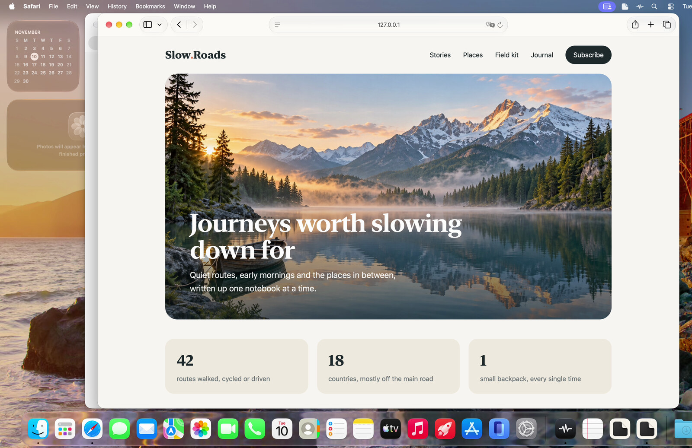
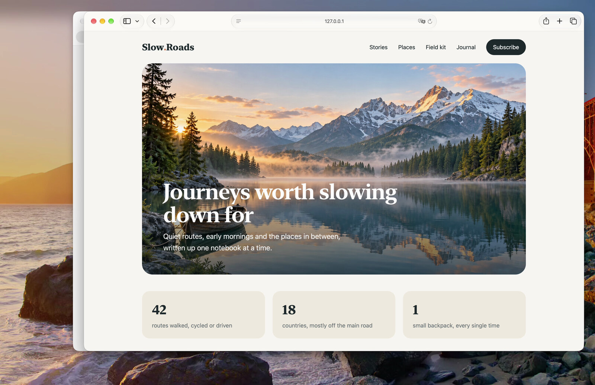
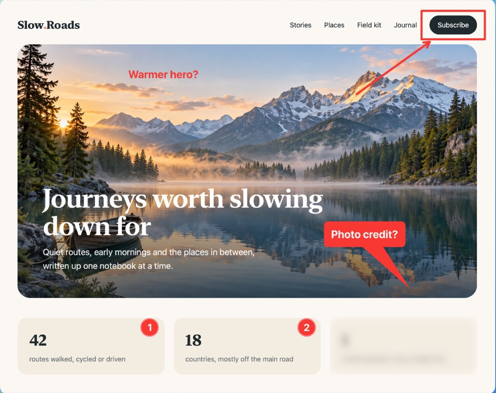
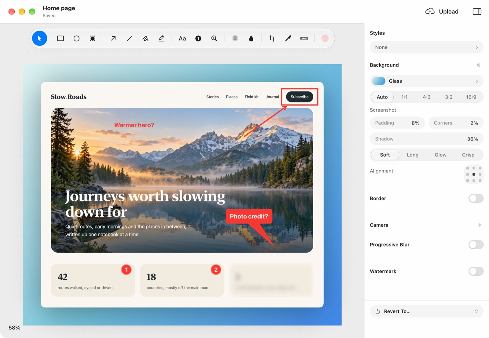
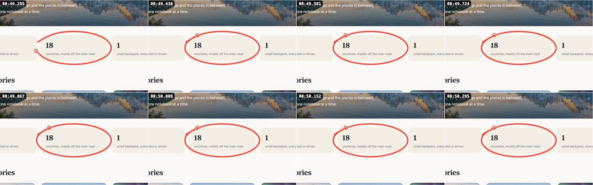
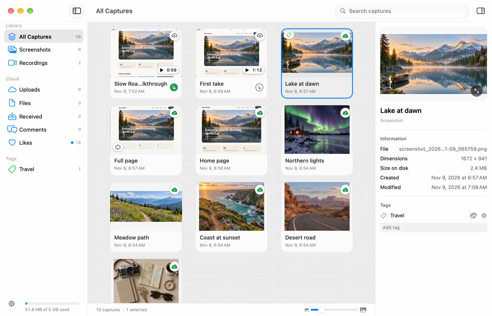
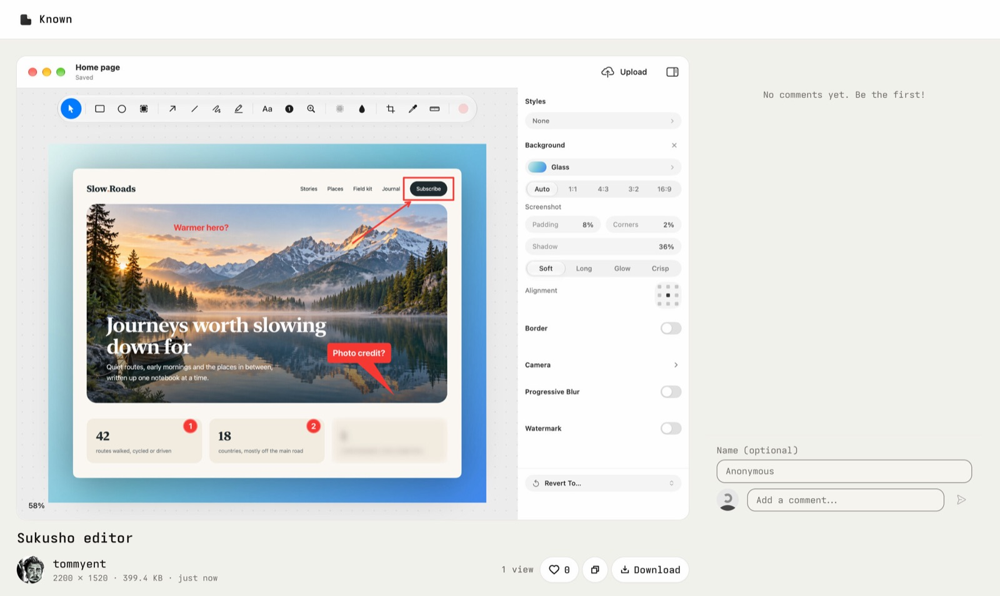
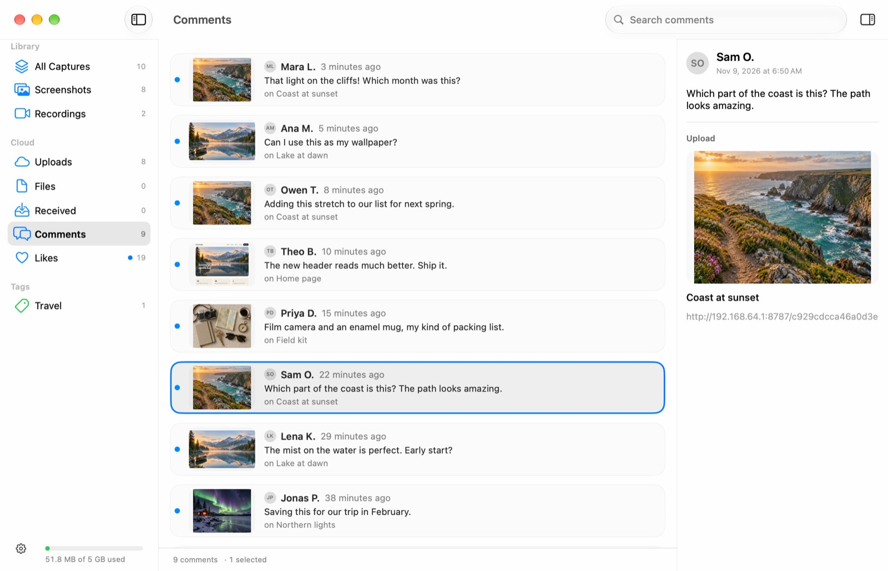
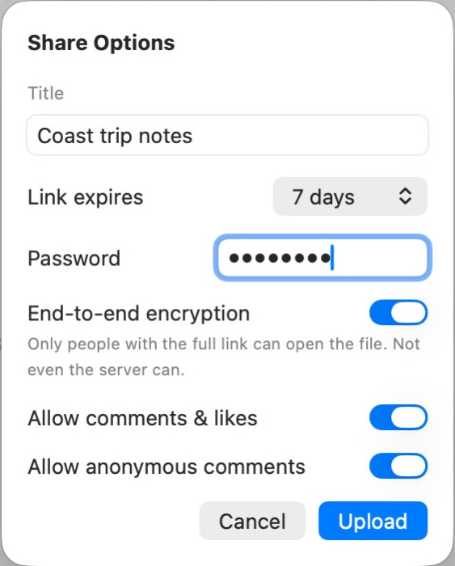

Keep the clutter out of recordings
Clean desktop leaves desktop icons, the Dock and notification banners out of display and area recordings. It’s on by default, and your real desktop never changes.



don’t tellSukusho is a free, open-source Mac app that captures and records your screen, marks it up, and shares it with a link.
Capturing, recording and editing work as soon as it’s installed. Share links also need a Cloudflare account, where you run Sukusho’s own link server, the Sukusho Worker.

Sukusho reads the words on screen in every capture, so you can find a screenshot by what was in it. Change the red words to search ten sample captures.
Recordings are searchable too: Sukusho reads three frames from each, plus the captions. It all happens on your Mac, and nothing it reads is uploaded.
Type app: and a name to keep only what you captured in that app.
Clean desktop leaves desktop icons, the Dock and notification banners out of display and area recordings. It’s on by default, and your real desktop never changes.


Isolate voice runs Apple’s voice isolation on the microphone track. System audio and the original recording stay untouched.
End-to-end encryption seals images and files up to 32 MB on your Mac with CryptoKit. The key travels only in the part of the link after the #, which browsers never send.
An encrypted share link: https://share.example.com/3f9a1c2e#kV7q2Lw_x9TnRf3ZpYc0aHd8uJmE4sBo6GiN1tWyXe5Never sent to the server
Bug report writes every click, shortcut, scroll and pen stroke into a prompt for a coding agent, with a still of each moment, and a report with the steps for a person.

One still for every momentShake the pointer while you drag files from Finder and a shelf appears under it. Drop them on Share… and the links are copied.
⇧⌘3 draws an area, ⇧⌘6 records the screen. Each capture lands in the Library with the app and window it came from and the words read in it.

Boxes, arrows, numbered circles, a highlighter, blur and pixelate, and labels with a speech-bubble tail. The original stays untouched, so every mark can change later.
Copy the image and paste it straight into a chat, a ticket or a doc. Or upload it for a link from the Worker in your own Cloudflare account, with an expiry, a password or end-to-end encryption.

Comments and likes left on your share pages come back to the Library, newest first, each beside the capture it’s on.

From the first capture to the replies on a shared link. Select any screen to see it larger.
Three reasons to connect: sharing, searches and update checks.

No Sukusho account. Nothing to sign up for.
Yes. It’s open source under the MIT licence, with no account and no subscription. Share links come from a Worker you run in your own Cloudflare account.
Open the disk image and drag Sukusho to Applications. It’s notarised by Apple. Sukusho asks for each macOS permission, such as Screen Recording, the microphone or the camera, when you first use something that needs it.
A Cloudflare account and the Sukusho Worker, 2.1.0 or later. Deploy it from its repository, or with Deploy to Cloudflare in Settings › Cloud, then paste its address there. Capturing, recording and editing work without it.
Macs with Apple silicon running macOS 27 or later.
Choose Sukusho › Check for Updates… at any time. On its second launch Sukusho asks whether to check by itself once a day, and Settings › About › Updates changes the answer. Updates come from GitHub and install only if they carry this project’s signature.
Sukusho began as a fork of Screendrop by Fayaz Ahmed and has grown into its own app, with its own name, features and Worker. It isn’t affiliated with or supported by Screendrop. The two install side by side, and Sukusho brings over Screendrop’s captures and settings once, the first time it opens.